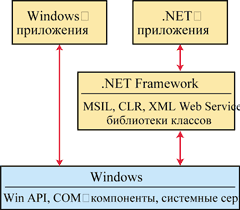
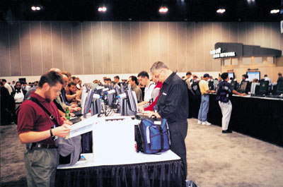

Андрей Колесов,
kolesov@bytemag.ru
В июле 2000 г. корпорация Microsoft (http://www.microsoft.com) впервые официально объявила о намерении создавать операционную программную платформу следующего поколения под названием .NET. Первая реакция экспертов на данное сообщение была такова: это скорее декларация о намерениях с ориентацией на отдаленные перспективы, чем конкретные технологические решения. Однако обнародованная спустя три месяца информация об архитектуре .NET Framework и появившаяся вскоре после этого первая публичная бета-версия набора инструментов Visual Studio .NET показали, что речь действительно идет о весьма серьезных и не очень отдаленных переменах (см. "В ожидании Visual Studio .NET", "BYTE/Россия" № 1'2001).
Более того, уже первый анализ будущих инноваций позволял говорить, что архитектура .NET - это не только развитие технологических решений Windows, но и непосредственная альтернатива концепции реализации распределенных Интернет-систем, известной сегодня под названием Java 2 Platform. Пока она не дотягивает по функциональности до варианта J2 Enterprise Edition (в частности, по функциям работы с базами данных), но вполне может конкурировать с версией J2 Standard Edition. Кстати, как стало недавно известно, разработка Microsoft .NET началась более четырех лет назад. Судя по всему, она велась не только под руководством Билла Гейтса, но и при самом непосредственном его участии.
Тут можно вспомнить, что в последние годы глава Microsoft переложил функции оперативного руководства корпорацией на своего старинного друга Стива Балмера (в июле 1998 г. Балмер стал президентом Microsoft, а в январе 2000 г. - и ее исполнительным директором). Сам же Билл Гейтс оставил за собой пост председателя правления и назначил себя на новую должность "главного архитектора ПО" (Chief Software Architect). Тогда смысл этих перестановок был не очень понятен, но сегодня все становится яснее - речь шла о начале масштабных работ по созданию новой технологической платформы.
Почти в течение года обсуждение архитектуры .NET сводилось фактически к анализу новшеств Visual Studio .NET, а также еще одной ключевой технологии - XML Web Services (см. статьи по этой теме в "BYTE/Россия" № 9'2001). Дальнейшая конкретизация идей .NET произошла на состоявшейся в конце октября нынешнего года в Лос-Анджелесе конференции Microsoft Professional Developers Conference (PDC'2001). Более того, на ней фактически была подведена черта под этапом презентаций и предварительного изучения предлагаемых новшеств. И сейчас начинается этап практического освоения технологии .NET.
Сама по себе ежегодная конференция PDC - одно из значительных событий для ИТ-отрасли. Это крупнейшее мероприятие для разработчиков ПО, к нему обычно приурочены многочисленные анонсы новых продуктов и технологий Microsoft. Традиционно с программным докладом на конференции выступает Билл Гейтс.
На этот раз PDC'2001 собрала около 7 тыс. участников (это меньше, чем обычно, - организаторы ограничили число мест из-за сентябрьских событий). Каждый рабочий день конференции начинался с пленарных докладов, а затем работа шла по пяти параллельным секциям, где было сделано около 130 докладов. В отдельном зале размещалась выставка, в которой участвовало около 70 компаний-партнеров во главе с двумя генеральными спонсорами - Intel и Compaq. Участникам был предоставлен зал с 600 рабочими станциями для выполнения лабораторных работ с новыми продуктами Hand-on Labs, а также еще 600 ПК информационной системы конференции.
.NET Framework
Ключевой элемент всей архитектуры .NET - операционная среда под названием .NET Framework. Фактически она представляет собой надстройку над ОС (конечно же, Windows!), в среде которой выполняются .NET-приложения. Если традиционные Windows-приложения реализованы в виде машинного кода, который напрямую взаимодействует с функциями Windows (Win API, COM-компоненты, системные сервисы), то .NET-приложения работают с ними через функциональный слой .NET Framework (рисунок).
|  | Схема работы приложений с Windows.
|
Все программные компоненты в рамках архитектуры .NET реализуются в виде байт-кода на внутреннем языке Microsoft Intermediate Language (MSIL), который "исполняется" в среде Common Language Runtime (CLR) с применением единых библиотек стандартных классов, средств доступа к удаленным сервисам (в первую очередь XML Web Services), а также средств самой ОС (те же Win API, COM и т.п.). В отличие от Java байт-код в CLR будет выполняться не в режиме интерпретации, а путем предварительной компиляции отдельных фрагментов программы или приложения целиком. (Кстати, примерно так построена платформа "1С:Предприятие" - компиляция исходного кода приложения выполняется лишь после его загрузки на исполнение.) По мнению Microsoft, это должно существенно повысить производительность работы приложений по сравнению с Java. На PDC'2001 распространялись результаты целого ряда исследований, подтверждающих заявленное превосходство CLR-технологии.
Помимо языков программирования от самой Microsoft - VB.NET, C#, JScript, J#, сегодня имеется уже более 30 языков других разработчиков (Perl, Cobol, FORTRAN, Smalltalk и пр.), которые обеспечивают работу .NET-приложений, т. е. преобразование исходного кода в MSIL. Очевидно, что такой подход имеет свои плюсы и минусы, которые можно обсуждать отдельно. Но понятно, что подобная унификация фактически полностью нивелирует различия в функциональности разных языков. Получается, что выбор оптимального для решения данной задачи инструмента будет в основном определяться привычкой программиста к тому или иному синтаксису (это очень хорошо видно на примере VB.NET и C#).
Важное достоинство наличия промежуточной среды исполнения приложений - повышение (по крайней мере, потенциальное) надежности программ (примерно так же, как это происходит при выполнении скриптов и компонентов в среде Web-браузера). Интересна тут возможность контролировать уровни прав доступа приложений к тем или иным функциональным и информационным ресурсам ОС. Понятно, впрочем, что все эти новые возможности подразумевают резкий рост требований к аппаратным ресурсам. Хотя на PDC'2001 был представлен весьма любопытный проект Terrarium (http://www.gotdotnet.com/terrarium) - многопользовательской Интернет-игры для программистов, - демонстрирующий возможности .NET Framework с точки зрения производительности и надежности приложений.
В первых сообщениях о .NET Framework упоминалась проблема поддержки многоплатформенности приложений. Однако пока видно, что Microsoft придерживается своей традиционной трактовки понятия "разные платформы" - это различные аппаратные средства (от мобильных телефонов до кластеров), которые работают под управлением той или иной разновидности Windows.
XML Web Services
Ориентация на XML-стандарты - одна из отличительных черт .NET. Помимо обычных задач обмена данными, это подразумевает использование технологии XML Web Services (ранее она называлась просто Web Services) для создания распределенных Интернет-приложений (см. об этом статьи в "BYTE/Россия" № 9'2001). Однако нужно подчеркнуть, что данная технология базируется на открытых стандартах и не принадлежит никакой конкретной ИТ-компании; сейчас даже нельзя сказать, что кто-то из поставщиков доминирует в этой области. Хотя состояние "Microsoft против всех остальных (IBM, Sun и пр.)" здесь просматривается довольно отчетливо.
В любом случае следует иметь в виду, что протоколы XML Web Services могут поддерживаться и вне .NET Framework, с помощью других дополнительных компонентов. Вместе с тем Microsoft подчеркивает, что данные технологии реализованы в .NET в виде ASP.NET на уровне встроенных функций и их создание обеспечивается ее инструментарием. Однако тут хотелось бы привести один любопытный пример.
Во время своего выступления на открытии PDC'2001 Билл Гейтс пригласил продемонстрировать создание XML Web-сервисов руководителя разработки .NET и создателя C# Андерса Хелсберга (его считают одним из отцов Borland Delphi, последние годы он работает в Microsoft, имея должность Distinguished Engineer - "Выдающийся инженер"). Тот действительно очень наглядно показал за 15 мин основы технологии "на пальцах", используя для написания программного кода обычный редактор Notepad. Почему же он не воспользовался средой Visual Studio .NET? Один из участников конференции в кулуарах высказал небезосновательное предположение, что тогда компьютер Хелсберга мог бы и не справиться с созданием нужных компонентов в отведенное ему время...
Во время конференции Microsoft представила спецификации следующего поколения XML Web Services - Global XML Web Services Architecture (GXA), которая включает набор дополнительных протоколов для повышения безопасности и производительности: WS-Security (использование цифровой подписи и шифрования), WS-Licence (поддержка безопасности с использованием уже существующих сегодня цифровых удостоверений), WS-Routing (управление передачей сообщений по нескольким адресам) и WS-Referral (описание точной структуры сообщения). Все эти спецификации соответствуют согласованным предложениям Microsoft и IBM, представленным в апреле 2001 года на конференции W3C Web Services Workshop.
Visual Studio .NET
Новый пакет инструментальных средств Visual Studio .NET не только базируется на архитектуре .NET Framework, но и отлично демонстрирует ее идеологию единой исполняемой среды. В частности, в нем реализована интегрированная среда разработки (Integrated Development Environment, IDE) для всех .NET-языков. Мы планируем рассказать о ней в следующем номере журнала, но сейчас хотелось бы отметить, что, несмотря на очевидные достижения в области унификации этой среды, имеются и некоторые "проколы".
В рамках VS.NET Microsoft предлагает пять своих языков программирования - C++, VB.NET, C#, JScript и J#. Среди них C++ занимает особое место - ему одному будет позволено создавать программы на "родном" машинном коде, все остальные будут использовать MSIL+CLR. Отметим появление в самый последний момент (он объявлен в начале октября) языка J#, наследника Visual J++ 6.0. Видимо, Microsoft все же решила, что позиционирование C# в качестве прямого конкурента Java не обеспечит нужной динамики привлечения Java-разработчиков в лоно .NET. Поэтому создание своего собственного Java-инструмента не помешает. Что касается VB.NET, то о проблеме совместимости с VB 6.0 мы уже писали (см. "BYTE/Россия" № 3, 6, 8'2001). Эта тема обсуждалась на PDC'2001, и мы намерены в ближайшем будущем рассмотреть ее более детально.
Впрочем, знания "сегодняшнего" VB 6.0 пригодятся всем пользователям VS.NET IDE - в этой среде реализована поддержка макропрограммирования с помощью VBA в нынешней его версии (так же, как это реализовано в офисных приложениях Microsoft).
Одна из ключевых идей VS.NET - возможность подключения к его среде программирования языков, а также различных дополнительных компонентов независимых разработчиков. И целый ряд таких средств (например, Visual Perl и Visual Python компании ActiveState) был представлен на PDC'2001. Однако нужно отметить, что в области языков программирования взаимоотношения Microsoft с поставщиками других систем будут весьма разноплановыми.
Microsoft предоставляет другим разработчикам возможность использовать только среду IDE VS.NET - в рамках своей партнерской программы Visual Studio .NET Integration Program (пример такого подхода был представлен на конференции компанией Rational). Однако многие другие поставщики предпочитают создавать свою собственную среду разработки, порой предлагая возможность подключения собственных языков к VS.NET в виде дополнительного компонента. Отметим также, что ряд разработчиков готовят свои наборы инструментов из расчета формирования как .NET-, так и обычных Windows-приложений.
Окончательная версия самого Visual Studio .NET будет доступна для подписчиков MSDN в конце нынешнего года, а официальное представление пакета и начало продаж коробочных версий состоятся в феврале 2002 г.
.NET My Services
Важная роль в идеологии .NET отводится комплексу Интернет-услуг, предоставляемых Microsoft в рамках своей грандиозной сети MS Network (MSN, http://www.msn.com). Еще в момент объявления инициатив .NET было ясно, что расширение этих услуг пойдет в двух направлениях. Во-первых, будет расширяться спектр услуг MSN. Во-вторых, Microsoft собирается предлагать свои технологии создания таких Интернет-услуг независимым разработчикам.
Последнее направление сегодня представлено программной платформой .NET My Services (ранее проект имел кодовое название Hailstorm - "гроза с градом"). Эта платформа была объявлена в сентябре, и ей на PDC'2001 было уделено достаточно большое внимание. Следует отметить, что, вообще говоря, эта технология не связана напрямую с .NET Framework, хотя и реализована с помощью XML Web Services.
В упрощенном виде речь идет о возможности централизованного хранения неких ресурсов (не только информационных, но и программных), к которым можно было бы получать доступ с любого удаленного клиентского устройства. Например, это может быть тривиальная адресная книга. Платформа .NET My Services предполагает возможность программного доступа к этим ресурсам с помощью соответствующего набора SDK.
В настоящее время она представлена автономными службами .NET Passport и .NET Alerts. Первая из них обеспечивает выполнение однократной авторизации (упрощенно говоря, ввода пароля) для работы с последовательностью защищенных ресурсов. Вторая позволяет гибко управлять передачей сообщений, например, автоматически перенаправляя их на компьютер, сотовый телефон, мобильное устройство пользователя, в зависимости от заданного им расписания. В варианте .NET My Services, представленном сейчас в виде предварительной версии (окончательная версия станет доступна в следующем году), предусмотрено еще более десяти подобных служб: Календарь, Контакты, Персональные установки приложений и т. п.
Поддержка мобильных систем
Довольно много внимания на конференции уделялось мобильным системам и различным "умным устройствам". Тут опять стоит подчеркнуть, что многоплатформенность в представлении Microsoft - это поддержка широкого спектра аппаратуры. Однако, если еще четыре года назад ноутбукам в линейке вычислительных средств отводилась одна из пяти позиций (о карманных компьютерах, а тем более телефонах тогда вообще речи не было), то сейчас именно мобильные системы начинают доминировать в качестве клиентских рабочих мест.
Для этого класса устройств на PDC'2001 были представлены соответствующие средства: Microsoft .NET Compact Framework и Smart Device Extensions for Visual Studio.NET. Первый набор (это явная альтернатива Java 2 Platform Micro Edition) представляет собой подмножество основного "настольного" .NET Framework, а второй - специальные дополнения, позволяющие разрабатывать приложения для мобильных систем в среде VS.NET. По мнению Microsoft и ряда ее партнеров, новые средства позволят минимизировать различия между созданием программ для настольных ПК и "умных устройств".
Tablet PC - мобильная платформа от Microsoft
Отдельно стоит упомянуть о предварительной демонстрации принципиально нового мобильного компьютера Tablet PC, поставки которого непосредственно под торговой маркой Microsoft начнутся в следующем году. Идея этой платформы никак не связана с .NET, однако именно ее многие обозреватели назвали наиболее яркой новинкой конференции. С точки зрения аппаратуры в Tablet PC нет особо выдающихся инноваций. Внешне компьютер выглядит именно как планшет, одна из поверхностей - знакомый нам 15-дюймовый экран. Изюминка здесь - режим работы: Tablet PC ориентирован в основном на использование обычных приложений (средств разработки, офисных пакетов) в режиме рукописного ввода.

Новая система работает под управлением Windows XP Professional. Объявленный на PDC'2001 набор для разработчиков Tablet PC Platform SDK включает библиотеку специальных API-функций с примерами их применения на языках C++ и C#, а также примеры приложений для новой платформы. Разрабатывать программы можно с помощью Visual Studio 6.0 или Visual Studio .NET.
Что нас ждет впереди
Теперь можно вернуться к начальным вопросам о .NET. Это некоторое жонглирование терминологией в маркетинговых целях или действительно новая архитектура? Если это новая архитектура, то как быстро произойдет переход на нее? Предварительные ответы на эти вопросы примерно таковы.
.NET - это не просто модификация Windows, а новая платформа, основанная на иных стандартах. В частности, нужно понимать, что новая версия Visual Studio - это не VS 7.0 и не COM+++, а VS.NET 1.0.
Однако .NET пока не является самодостаточной платформой, способной полностью заменить протоколы COM - основу Windows. Иными словами, обе эти платформы будут еще долго существовать параллельно, хотя бы потому, что многие средства, реализованные с помощью COM+, в рамках .NET пока отсутствуют. Точнее сказать, предполагается некий эволюционный переход. Только что выпущенная Windows XP - это вовсе не операционная система .NET; для поддержки .NET-технологий ей требуется все та же дополнительная функциональная среда .NET Framework, которая в окончательном релизе появится только в начале будущего года.
То же относится и к серверным платформам Microsoft. Хотя представители корпорации часто используют термин "серверы семейства .NET", говоря о выпущенных в течение последнего года продуктах, как раз это представляется скорее маркетинговым ходом - собственно технологии .NET в них не задействованы (не нужно думать, что использование передачи данных в формате XML - ключевой признак принадлежности к .NET).
По мнению многих аналитиков, для корпоративных пользователей нет вопроса: "Переходить или не переходить на .NET?". Вопрос только один - "Когда?". Поэтому к переходу к .NET уже нужно готовиться. В то же время никто не советует ринуться в .NET-технологии прямо сейчас. Полезно вспомнить, что новые продукты для критических для бизнеса целей лучше применять, начиная с выпуска 3-й версии. Тем не менее новшества нужно изучать, например, используя Visual Studio .NET для разработки небольших прототипов некритических приложений (но при этом желательно вести такие разработки для широкого круга задач).
По оценкам экспертов Gartner Group, лишь 30-40% существующего сегодня кода можно будет перенести на новую платформу, остальное придется переписывать и перепроектировать. И не стоит ожидать, что Microsoft озаботится созданием утилит для автоматического преобразования кода. Прогнозы Gartner по поводу динамики перехода на новую платформу таковы. К концу 2003 г. 30% разработчиков будет работать на платформе .NET (причем в основном это будут приложения ASP.NET), остальные по-прежнему будут ориентироваться на COM+. Однако через полгода доля первых вырастет до 70% и к декабрю 2004 г. достигнет 95%.
Все ближайшие годы будет идти переход с Visual C++ на C#. В течение четырех лет VC++ и C# будут применяться в соотношении 2:3. Язык C++ будет использоваться в основном на уровне системного программирования.
В области Интернет-приложений и систем для электронного бизнеса будет отчетливо наблюдаться разделение на .NET и J2EE (Java 2 Platform Enterprise Edition). Доля платформы Microsoft будет неуклонно расти и через три года стабилизируется на отметке 80%. Вместе с тем Gartner избегает использовать термин "победа" в отношении какой-то из платформ, делая упор на то, что крупным организациям требуется многоплатформенность. В то же время малым и средним организациям придется выбирать какую-то одну из платформ, и в этой ситуации позиции Microsoft выглядят предпочтительнее.
Основные объявления на Microsoft PDC'2001В ходе конференции было объявлено о выпуске целого ряда продуктов и средств.
Кроме того, предварительно были представлены следующие новые технологии.
|